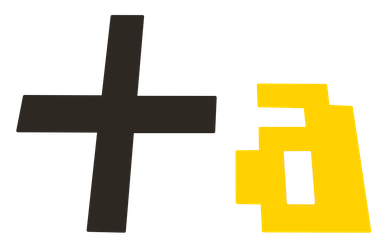

2020.10.30~
本日から製作活動と並行して、自分の制作したものをまとめる/紹介するwebページを作ることになった。
来週のゼミの時間までにイラストレーターで複数案作り、ゼミ生に意見を聞き、次の週に本格的に制作に取り組む予定だ。
今日はテーマの軸になりうる”民具”について軽く調べたので、自分用にメモとして残しておく。
＜民具とは＞
民具とは、現代の言葉で言い換えると「日用品」である。
といっても、一般的には機械によって大量生産された製品は除外され、人々が生活の中で必要と感じ、制作したものを指す。
民具には最低限の生活のなかで工夫され、機能性を追求してきたものが多く、それが、伝承されてきたものである。
そこには堅牢な合理性が集約されている。
この説明を読む限り、民具とは、デザイン性は二の次で合理性を最重視しているように感じる。なので、合理性とデザイン性
を兼ね備えた新時代の民具として提案するのも面白いと思う。
先生に何をしたいのかわからないと言われハッとした。
自分が先生からのアドバイスを脳死で受け入れ、指摘されないように立ち振る舞っていたことに気づいたからだ。
今回製作するwebページ及び発表では、自分の本当にやりたいことを伝えられるよう努める。言わなくても/書かなくても
伝わるだろうという気持ちを捨て、取り組もうと思います。
webページを製作する目的
「小さな不満を取り除きたい。」
雨天時に自転車通学をする妹のために"リュックに傘をつけられる装置"を製作した際に、少数ではあるが
自分も欲しいという声をいただきました。また、他の人も同じ不満を抱えていて、それを我慢して生活していることに気づきました。
このような人々の小さな不満を取り除き、日々の生活を少しだけより良いものにできるようにwebページを製作しようと考えました。
webページの特徴・名前
webページには、私が今まで製作した生活をちょっとだけよりよくするかもしれないモノを掲載しており、
サイト閲覧者は自由にデータをダウンロードし、作ることができます。
サイトの名前は「+a（プラスアルファ）」としております。
ロゴは、日々の生活をちょっとだけよりよくする（+a）と親指と人差し指をつけて表すオッケーサインをイメージしております。

利用者が得られるメリット
利用者はstlファイルをダウンロードし、3Dプリンターで出力することができます。
thingiverseなどをはじめとしたデータをダウンロードできるサイトは多くありますが、データが雑多になっており、
必要なデータが探しにくい欠点があります。このサイトには日々の生活をちょっとだけよりよくするかもしれないモノのみを掲載することで、
利用者がデータを探す時間を短縮します。